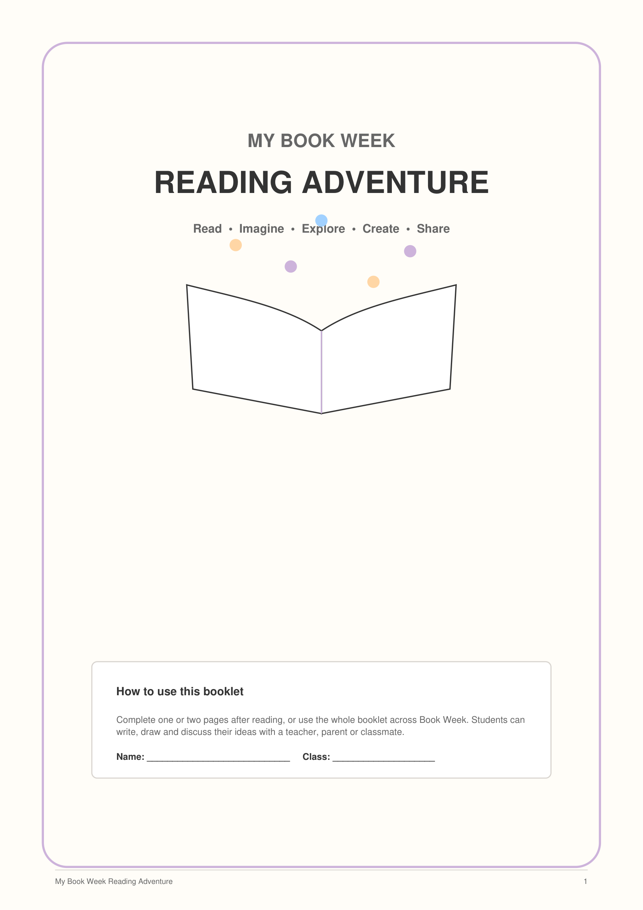

Foundation–Year 6 · English · Reading · Book Week · Free Printable
My Book Week Reading Adventure
A free 8-page printable reading booklet that helps primary students explore stories, characters, settings, vocabulary and their own responses to books during Book Week.
Workbook Preview

About This Book Week Workbook
My Book Week Reading Adventure gives students flexible ways to respond to a book through writing, drawing and discussion.
Teachers and families can use one or two pages after reading, or complete the whole booklet across Book Week.
Activities range from identifying story elements to exploring characters, settings and vocabulary, creating a new book cover, and recommending a favourite book.
Learning Focus
Students respond to literature by exploring important story elements and explaining their ideas about books they read.
What's Included
- Explore the Story
- Character Detective
- Step Into the Setting
- Wonderful Words
- The Moment I Loved
- Become the Illustrator
- Book Review and Recommendation
Skills Practised
- Identifying story elements
- Character analysis
- Exploring setting
- Vocabulary development
- Using evidence from a text
- Personal response to reading
- Creative thinking
- Book recommendation
Teacher & Parent Notes
Students do not need to complete every page. Choose activities that suit the book, year level and learning goal.
Foundation–Year 2 students may complete some activities through drawing, discussion or adult-supported writing. Older students can give more detailed written responses and use evidence from the text.
How to Use the Booklet
Choose a favourite story, class novel, picture book or independent reading book. Students can then complete selected activities after reading or use the booklet as a reading journal across Book Week.
The activities can be used for independent work, literacy rotations, small-group reading, homework or family reading at home.
Suitable for Foundation–Year 6
The booklet includes activities that can be adapted for different primary year levels. Some pages are suitable across Foundation–Year 6, while more detailed character and vocabulary tasks are designed for Years 3–6 or Foundation–Year 2 with support.
Ready for Your Book Week Reading Adventure?
Download the free printable booklet and choose the activities that best suit your students or children.
⬇ Download My Book Week Reading Adventure